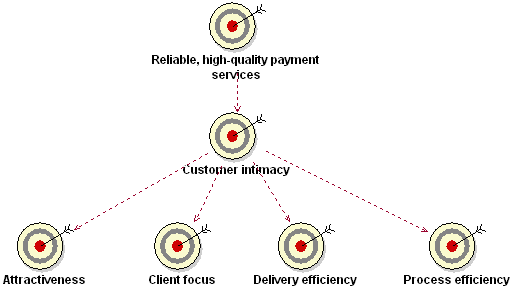
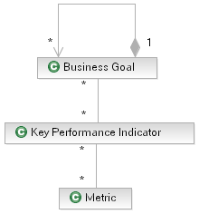

| Guideline: Defining Business Goals |
 |
|
| Related Elements |
|---|
IntroductionTraditionally, business activities have been planned and measured with a very strong focus on financial performance. On the one hand, managers might define both financial and nonfinancial objectives, while on the other hand they might be interested only in the outcome of the financial measures. This misalignment between objectives and measures leads, sadly, to undesirable yet predictable behavior. The modern enterprise does not only have to be competitive financially, but to be so on a variety of different fronts. Business goals must define more than just financial measures. They must also focus on, for example, employee satisfaction or customer success. Simply defining different business goals is not enough to ensure success, because certain goals might be measured or enforced more than others. Modeling business goals provides a technique for considering how the business strategy can be implemented in the short- and long-term and for defining a balanced set of measures to ensure that business processes support the strategy. The question that arises from this issue is: How do you implement strategy, particularly one that could require radical change? Business Strategy and Business GoalsBusiness strategy defines the manner in which the organization needs to interact with its environment, so as to fulfill its purpose. As such, business strategy is essentially focused on the external perspective of the organization, rather than internally managing the organization. Business strategy and business goals are closely related: Business goals define what needs to be achieved to realize a higher-level goal, while business strategy provides the boundaries within which these goals will be defined. Strategy does not, however, prescribe specific goals. Strategy is about positioning. In business, strategy describes the desired competitive position of the organization. The organization can fulfill its purpose once it finds itself in a sustainable competitive position. Business goals describe what must be achieved to reach that desired competitive position. Both business strategy and business goals are concerned with what must be achieved and not how it will be achieved. Business goals should focus on what provides competitive advantage to the organization, for only this is strategic. We can conclude that business goals must define what must be achieved in order to reach a sustainable competitive position. Business Goal Hierarchy Business goals are usually high level and have a long-term focus. However, business goals need to be translated to a concrete, measurable level before they can be used to manage the activities of the business. Such a measurable and time-constrained business goal is often referred to as an objective. Business goals therefore need to be arranged in a hierarchy, with each business goal (or objective) traced back to the higher level goals it supports. Without such linkage, individuals and departments can optimize their local performance but not contribute to achieving strategic objectives. It is imperative to obtain clear insight into this hierarchy of business goals and how it is supported by the activities of the business. This allows for rapidly propagating changes in direction from the strategic level downward. This ability to rapidly change the direction of the entire operation is called strategic agility, and it allows the organization to react to changes faster than its competitors. Here is an example of a business goal hierarchy in a payment services organization:  Figure 1. Sample business goal hierarchy The high-level business goal Customer Intimacy has been translated to business goals at a lower level, which are more recognizable to individual departments within the organization. By defining these more concrete business goals, the problem of objectively measuring customer intimacy is solved. Sometimes it is necessary to translate one or more of these lower goals further. Business Processes and Business GoalsGoals are useless in themselves. They must be translated into action in order to be meaningful. Every business goal needs to be directly supported by at least one business process. If not, it needs to be further defined in terms of more concrete subgoals. It has always been difficult to define a business strategy and then derive objectives in support of this strategy for different parts of the organization. Business processes in the modern enterprise are integrated and cross-functional, and this actually makes the process of allocating business goals easier than before. Business goals are allocated to parts of the organizational in terms of these integrated business processes, which add value to stakeholders of the business. The contribution of one particular part of the organization to customer satisfaction, for example, can be defined and measured. Balanced ScorecardThe answer to the question posed above must be sought in a method that gives the user insight into the course of action taken. The method must also indicate to the user the consequences of any action taken. One such method is the Balanced Scorecard (BSC) by Kaplan and Norton [KN96]. The BSC defines a technique for translating business strategy into business goals and measures, thereby ensuring a balanced focus on achievement of all goals. Kaplan and Norton write: "Front-line employees must understand the financial consequences of their decisions and actions; senior executives must understand the drivers of long-term financial success. The objectives and measures of the Balanced Scorecard are ... derived from a top-down process driven by the mission and strategy of the business." The theory behind the BSC is quite logical:
Business goals are scored using four perspectives. It could be concluded that there are only four types of business goals. However the method of scoring and thus the types of business goals is arbitrary. An organization is free to define more types as they are required. Financial Perspective-Indicates what has happened in the past and measures what needs to be performed to achieve the financial objectives and check the performance. Customer Perspective-Looks at the present and indicates what needs to be accomplished to improve customer relationship. Learning and Growth Perspective-Looks at the future and what must be achieved to maintain growth and achieve further improvement. Internal Process Perspective-Looks at the present and indicates which internal processes must be performed with excellence for customer and shareholder satisfaction. An important feature of the BSC is that there needs to be a cause-and-effect relationship between all the perspectives and hence also between all the identified business goals. The following simple but effective example illustrates this.
Measuring Goal AchievementJust the intention to achieve goals is not enough to ensure that the business strategy will be executed. People must receive feedback on their actions in order to learn and improve. By measuring the achievement of business goals, business activities can be increasingly aligned with strategy. Measurements are useful for a number of reasons. First, measurements provide an indication of how successfully the business strategy is being implemented at various levels of the business. Second, measurements give insight into the effectiveness of goals. Finally, measurements provide a feedback mechanism with which minor adjustments can be made to the strategy based on operating conditions. This feedback can also be accumulated and aggregated over a long period with which the strategy can be adjusted more significantly. If business goals are not translated to sufficiently measurable levels within the organization, they might remain too abstract for employees to relate to, which will make it very unlikely that people will strive to achieve the goals in their daily tasks. The current definition of Artifact: Business Goal includes the details to measure the goal in the future whereas a more complete model commonly used in strategy modeling is shown in Figure 2.  Figure 2. Goal-KPI-metric model Goal or sub-goal: Organizations define goals to meet their mission and to set strategic direction. In SOMA, the term goal denotes a business aspiration starting at a high level. For example a high level goal could be to increase revenue. This goal can be decomposed into sub-goals such as "increase revenue from <x>", and "increase revenue from <y>". KPI's: KPIs are used to determine how well a business is meeting its goals, or to assess the level of performance of business processes. For example, for the goal "increase revenue", a specific KPI could be "increase revenue by 5% during the next fiscal year". This provides a specific way to determine if the goal has been met. Metrics: Metrics identify the type of measurements that need to be collected to assess the state of the KPIs. For a KPI such as "increase revenue by 5% during the next fiscal year", a metric could be "record the revenue from all revenue generating transactions". Measurements would then need to be taken of each relevant transaction, across all systems that support those transactions. An implication of this is that all of the individual measurements dictated by the metric would need to be aggregated and reported in a meaningful way so that it can be determined if the related KPI has been met. Resolving Goal ConflictsDue to the diverse nature of business goals, they might appear to conflict with one another. A typical example is for call-center employees to service many customers in a specific time (throughput), yet deliver high quality of service to each customer (which takes time). If the call-center manager rewards the employee with the most calls, the service level will drop. On the other hand, if the manager rewards the employee with the most satisfied customers, the throughput will drop. Volume versus time or quality versus cost are recognizable goal-conflict patterns to which Eriksson and Penker refer. They also described a technique, using an association stereotyped <<contradictory>>, for explicitly modeling conflicts between business goals. Managers must be aware of this very common dilemma when setting business goals. However, the strategy of an organization does not stand or fall on any single business goal, much the same as a war is not wan or lost by a single battle. The direction of the organization is derived from the sum of all actions taken. It might therefore seem that a business goal is counter-productive, but when the goal is measured as one part of the whole, the sum is actually positive. This means that localized inefficiencies might actually contribute indirectly to the business strategy. Nonetheless, not performing a minor "course correction" (because for example, somebody is more interested in the bonus as a result of the performance of his or her own department) can put the organization as a whole at a disadvantage. ConclusionAn organization has a vision, which is translated into a strategy. The strategy must be met by the business goals that are ultimately measured in the operations of the organization. The vision is implemented by business workers and business actors interacting to realize the business use cases. Business goals are the "glue" between the business strategy and business use cases. If they are correctly defined, they will give the organization the required insight to keep on course or to change course as required. Business goals must be defined at a sufficiently high level in order to focus the entire organization on the vision. Objectives and measures must be defined at a sufficiently low level within an organization in order that employees can identify themselves with them. Business goals must be measurable to be effective, either quantitatively or by the sum of subgoals (qualitatively). There are a number of techniques for defining and measuring business goals, one of which is the Balanced Scorecard. Whatever technique is used, however, it needs to be applied as a management tool and not solely as a measurement instrument. |
|